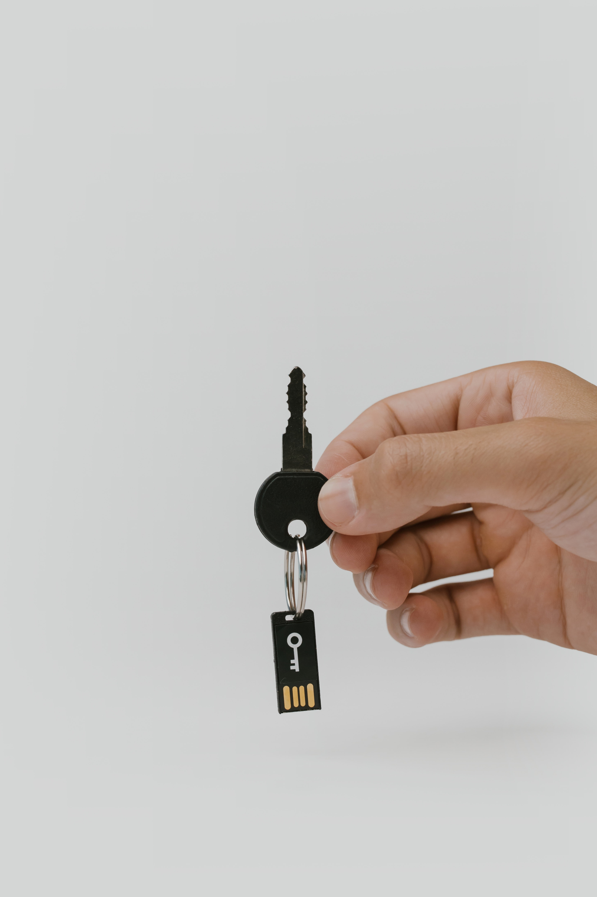

Why You SHould Worry
Hello, so it seems you're worried about your privacy and the potential harm that can come due to your social media and the technology allowing you to access this media. For example, have you ever browsed in search of a piece of clothing and then next thing you know your instragram or facebook is bombarding you with ads of the product you were literally just searching for and then you get the feeling as if someone is listening in on your device as you see the item you were searching for in all of your apps. You are not alone! This happens to many people and they get the feeling as if someone is watching over them and spying on them when in reality, it is the company that is tracking your information from multiple apps and bombarding you with ads expecting you to buy their product faster. Now, imagine, at a world-wide scale how much harm it could potentially cause. Nowadays, there are kids with tablets and some aren't in a kid friendly mode so these kids are getting bombarded with ads and are being forced into a consumeristic culture before they even have any money to spend.
What companies do with your data?
It is a naive idea to assume that companies do not do anything with our data. It is simply not the case, even when you opt out of sharing data, they still find a way to procure your data. It may not be all of the data that they had requested for but it is enough for them to make some money off of our data. These big tech companies make money off of our information by selling it to other companies without our permission and next thing you know, that one thing that you've been wanting to buy for a while is all over your social medias because they are psychologically playing you into buying something that you weren't ready to purchase for a while but because they're bombarding you with ads through your social apps. In my opinion, it is a breach of trust between the consumer and company, we should not be psychologically bombarded with ads forcing us into a consumer mindset to spend our money on items we don't fully need.

Why You Should protect yourself!
There are many reasons as to why we should protect our data from these big companies and one of the main reasons is privacy. We as consumers of these apps and technoologies have a right to know where our data goes and what is done with our data. They sell our data to other companies and those companies use that information to bombard you with ads through your phone or with a new marketing plan that they formulated with the use of our data. It would be one thing if they used our data to somehow help the world but instead they use our information so that they can get richer. We, as consumers, should be able to decide if we want these companies to use our data and on top of that if they're making money off of our data without our permission, we should be able to earn money off of our data but we don't. They record every interaction we make and not many are as lucky to know that they're being recorded and that these companies are practicing predatory marketing which can lead young people with no sense of self to get into bad habits. Point of the matter is that we can use one application or one website and input our information just for them to share that information with third party companies that are just using data to refine their predatory practices.It is important for consumers to know what is being done with their data and how it can affect them and others.
